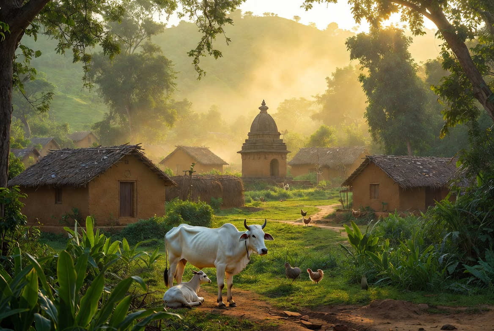
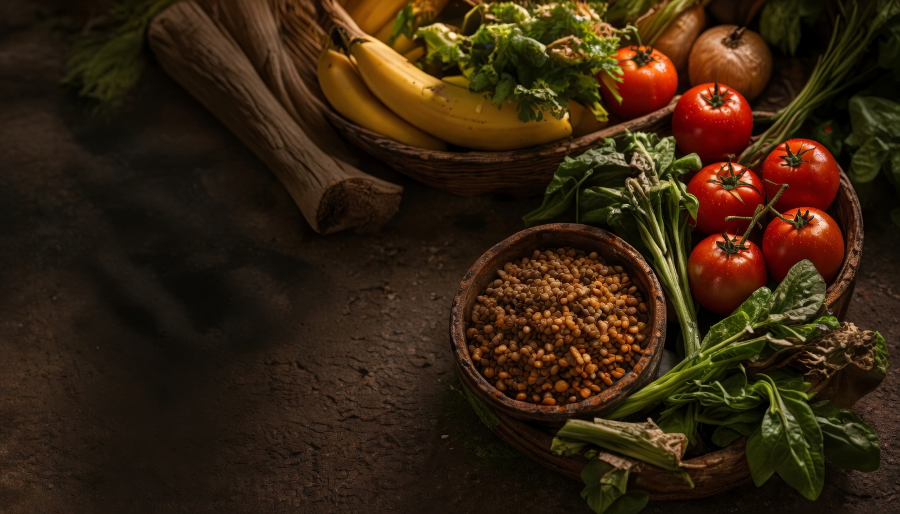
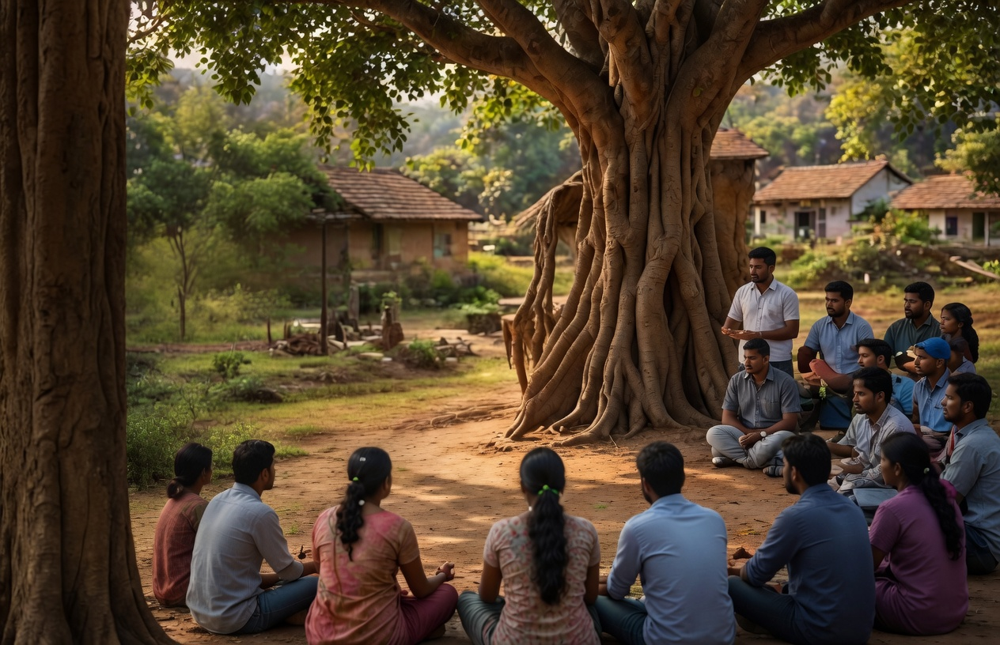
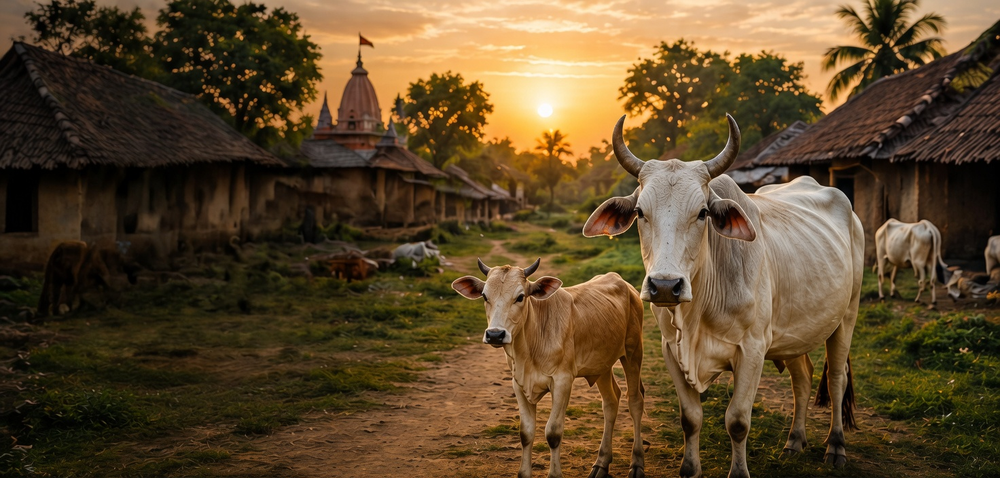

Gau Seva. Ahimsa. Compassion.
OUR WAY OF LIVING
Through the practice of respecting and protecting cows, we embrace a holistic way of healthy and balanced living that nourishes both body and consciousness.
GAU SEVA
By integrating Gau Seva into our daily lives — through supporting gaushalas, choosing Ahimsa milk and dairy, and adopting a sattvic lifestyle — we align ourselves with nature’s wisdom and timeless Vedic principles.
This way of life encourages gratitude, simplicity, responsibility, and reverence for all beings.
CORE PRACTICES
Serve and care for cows with gratitude, humility, and kindness.
Choose non-violence in thought, word, action, and lifestyle.
Live simply with pure food, mindful habits, and inner balance.
Support gaushalas, village harmony, and compassionate education.
“When we serve with love, we create a world of harmony.”
Gau Seva, Ahimsa and Respect for All Life
→
Sattvic Food for a Healthy Body & Mind
→Yoga, Meditation and Inner Balance
→
Workshops, Talks & Community Seva
→
Our Journey, Vision and Mission
→